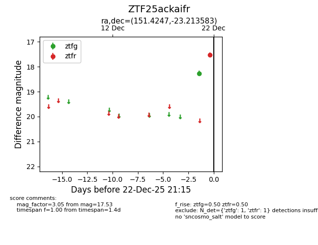
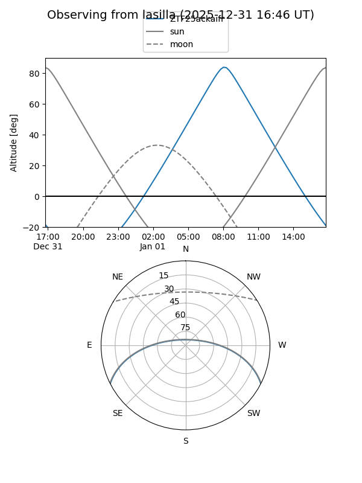
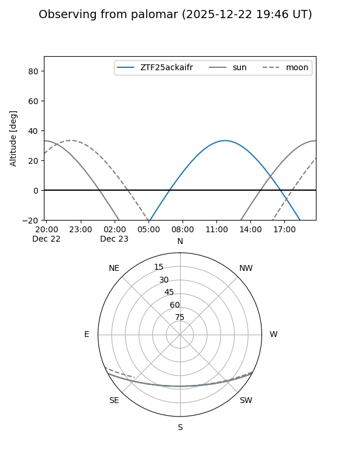

ZTF25ackaifr
Target ZTF25ackaifr at 2026-01-09 12:49
Aliases and brokers:
FINK: link
Lasair: link
ALeRCE: link
alt names
ZTF25ackaifr (ztf,fink_ztf)
Coordinates:
equatorial (ra, dec) = 151.4247,-23.21358
equatorial (HMS+DMS) = 10:05:41.93,-23:12:48.90
galactic (l, b) = (260.4857,+25.68888)
Flags:
Photometry:
last ztfg=18.26, ztfr=17.53
1 ztfg, 1 ztfr detections
Lightcurve

Visibility


Additional plots